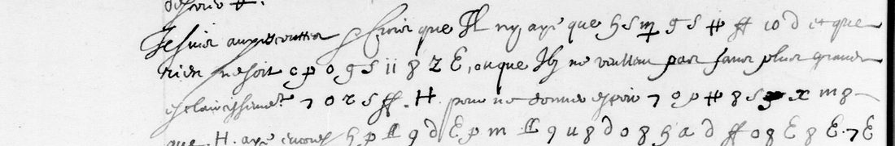

At a glanceKnown key applied, partial · 879 of 891 symbols given a value, about three quarters in words
- The letters
- Copies of Melchior de Sabran’s despatches from Genoa to Claude Bouthillier, secretary of state, in 1633. Nine leaves carry short passages in cipher inside clear French text.
- Where
- Bibliothèque nationale de France, Français 4134 (Sabran’s letter-book), ff. 46v, 50v, 54r, 57r, 57v, 66r, 66v, 69v, 73v; Gallica. No DECODE record.
- The cipher
- The cipher of Louis XIII’s 1631 letter to Sabran: several signs for each letter (letters, digits, shapes), a doubling sign, a few signs for words, and some number codes for names that are not in the key.
- How it was deciphered
- Harumi-Matsuba transcribed the signs with AI models (Claude, checked by Codex and Claude Sonnet) and applied George Lasry’s 2022 key. Here the reading was re-measured with the project’s language model and two leaves were compared with the images.
- What it says
- A plot at Savona was discovered in September 1633; the munitionnaire and two others were arrested and brought to Genoa, and those taken spoke of “donner la place”.
- Still open
- Most of f. 50v and parts of ff. 54r and 57r form no words; five name codes; a few AI corrections that read worse; the 1635 volume fr. 4135. No person has checked the transcription.
- Credit
- Harumi-Matsuba (the transcription and reading, AI-only, issue #56); George Lasry (the key); Satoshi Tomokiyo (published the key and listed the passages).
This is a sibling of Louis XIII to Sabran, 1631, the letter in the same cipher that George Lasry deciphered in 2022. These are different letters, read by a different route, so they have their own page.
01 The letters
Melchior de Sabran was the French resident in Genoa from 1630 to 1637. BnF fr. 4134 is his letter-book for 1633, “Troisième livre des negotiations du Sr de Sabran à Gennes”: fair copies of his despatches to Claude Bouthillier, who handled foreign affairs for Louis XIII. The copies are in clear French, with short passages left in cipher, usually a line or a few lines, sometimes a single word between clear phrases. The copyist reproduced the cipher signs carefully; nothing was deciphered on the page.
Satoshi Tomokiyo lists the passages on ff. 46, 50, 51, 54, 57, 66, 69 and 73 as having no contemporary decipherment and reports that Lasry found his 1631 key applies to them. The contribution covers nine leaves, 891 signs; f. 51 was not opened.

02 The cipher and the key
Lasry reconstructed the key from Louis XIII’s letter of 28 March 1631 to Sabran (Baluze 155 f. 79) and published it on Tomokiyo’s Cryptiana as “BNF Francais 4134” (25 May 2022). Each letter has up to five signs: the copyist’s p with a loop, 8, a hooked l, an N and a barred q all stand for e. A few numbers are words (26 de, 28 en, 44 la, 58 qui, 59 que, 66 tion), 27 is a title, and the sign 2 doubles the letter before it. There is no word division. Sixty-six different signs occur in these nine leaves. Five codes are not in Lasry’s table (3i, 35, 12, 20, 33) and are probably names.
03 What the cipher says
The passages that read form a running report on an affair at Savona, the Genoese port and fortress, in September 1633. In the contributor’s word division (their conjectures in brackets):
- f. 46v: les citadins la desirent … fier les armes … le senat … avec moy
- f. 57v: Savone … du chateau … assurer ses compagnons
- f. 66r (23 Sept): la ⟨3i⟩ de Savone dou[vestre] descouverte, l’on a mis prisonniers le munitionnaire et deux avec luy amenes … ceux qui sont pris … donner la place … troup[es] … l[e] gouvernement
- f. 66v (23 Sept): du soupçon … descouvert … de l’intelligence dans cet estat
- f. 69v: le munitionnaire de Savone … amenes ici … le discours
- f. 73v: le general des postes … consil[l]
So a plot (intelligence) to deliver Savona was uncovered; the munitions officer and two others were arrested and brought to Genoa, and those taken spoke of handing over the place. Sabran wrote this in cipher because it touched French dealings inside the Genoese state. The code 3i, “la ⟨3i⟩ de Savone”, may be the citadel; that is a guess.
Most of f. 50v, the longest passage (269 signs), does not read: a few words (les places, il estoit dispose, secret, faire surprise) stand among strings such as aeed eteeittete. Lines on ff. 54r and 57r are the same. The values are mostly legible on the images and the key fits the rest of the volume, so these stretches are more likely misread signs than a different key.

04 How it was checked
Harumi-Matsuba’s transcription was made by Claude Opus 5.5; where an independent transcription by OpenAI Codex disagreed, Codex and Claude Sonnet judged the sign on the image, and it was changed only when both agreed. Their figures: 879 of 891 signs have a value; on every leaf none of 1,000 shuffled keys scores as French-like as Lasry’s; three fresh Codex transcriptions agree on 92.4–92.7% of signs; and the same procedure, run blind on Lasry’s 1631 letter, recovers 92.0% of the letters of his decipherment. They call the result a partial reading. All of this is agreement between AI models: no person has checked the transcription.
Re-measured here (21 October 2026, measure.py):
- The project’s French model for 1570–1640 scores the decoded runs higher than all 1,000 shuffled keys on all nine leaves.
- 666 of 896 decoded letters (74.3%) fall in French words of three or more letters; shuffled keys reach 27.0%. The measure is generous, so three quarters is an upper bound on what reads, below the project’s 95% bar for a complete reading.
- The calibration recomputes from their files: 551 of 599 letters (92.0%); 540 (90.2%) for the blind first transcription alone.
- f. 66r and f. 66v compared sign by sign with the BnF images: 172 of 175 signs agree. On f. 66r one pair of signs is counted twice, and one correction the AI judges agreed on is wrong: the sign is z (r), not a hooked l (e), and with it the run reads secre[t], as the contributor had suspected.
05 What remains open
- f. 50v, most of lines 17–23, 25, 26, 29, 30, 32 (about 200 signs); f. 57r lines 21, 24, 27, 36, 38; f. 54r line 9: no words. A person’s transcription against the key is the next step.
- Name codes 3i, 35, 12, 20, 33, not in Lasry’s key.
- AI corrections that read worse: f. 46v (ie les excite broken to ieleseecite), f. 57r line 24 (capitan del…), and f. 66r line 23 (wrong on the image, above).
- f. 51 (listed by Tomokiyo) and the 1635 volume, BnF fr. 4135 (ten leaves): same key, another copyist’s forms; a trial gave only scattered words (le Milanois, de la ligue).
- The despatches as received by Bouthillier (Archives diplomatiques, Correspondance politique, Gênes) are not digitised and were not checked for contemporary decipherments.
- Lasry found that his key applies to these letters and may have readings of his own; he has not been asked yet.
06 Sources
- Bibliothèque nationale de France, Français 4134, Gallica btv1b9060193z, views 100, 108, 115, 121, 122, 139, 140, 146, 154. Français 4135, Gallica btv1b9060194c.
- Harumi-Matsuba, sabran1631-public (CC BY 4.0 data, MIT code), sent as issue #56, 20 October 2026; copied into the repository folder.
- George Lasry, key “BNF Francais 4134” (2022), in Satoshi Tomokiyo, “George Lasry’s solutions”, Cryptiana, “Melchior de Sabran (1631)”.
- Satoshi Tomokiyo, “French Ciphers during the Reign of Louis XIII”, Cryptiana.
Notes, the contributed files and the re-measure: targets/sabran1633/ in the repository.